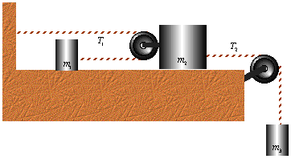
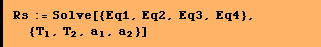
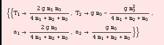
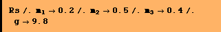
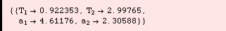

![[Graphics:../Images/index_gr_29.gif]](../Images/index_gr_29.gif)
Question #3
The system involves 3 masses connected by a complicated system of pulleys and masses but like any of the other simpler systems we can xxamine this one step by step.

This is the difficult final equation. It isn't obvious until you have played with some pulley systems. When you reeve a block and tug on one rope you reduce its motion by the number of lines. In this case the block is reeved with 2 lines so that the motion of the block is 1/2 that of the pulling rope. Another way of looking at it is that I have to pull twice as much line to get the block to move the same distance as if I had a line connected to it directly.

